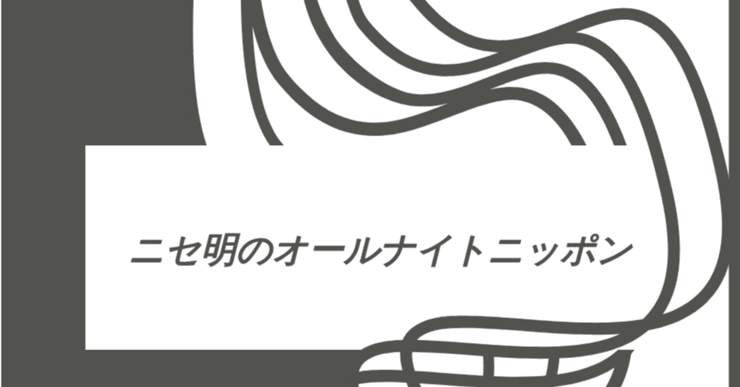

本当のところ、これをお笑いとして括るかどうかはかなり迷った。
しかし、「こんなにも面白い人がお笑いでないのなら何なのだ！」という想いから、今回は本マガジン『お笑い論』としても異質な、ある人物について取り上げたいと思う。
ニセ明。
それは2014年2月。くも膜下出血の治療により活動を休止していた星野源の復帰ライブ『STRANGER IN BUDOKAN』が開催された。
そんな、多くのファンも注目する場にロン毛＋サングラス姿で陽気に現れた彼は、あの布施明を彷彿とさせる歌唱力で、武道館を埋め尽くす観客を熱狂の渦に巻き込んでいく。
それ以降ライブはもちろん、星野のMVやCD特典映像等にたびたび登場。
じわじわとファンの間でも認知度を上げ、今や毎週火曜深夜に放送されている『星野源のオールナイトニッポン』内の冠コーナー『ニセ明のオールナイトニッポン』を担当するまでになった。
彼の真骨頂は、そのコントじみた身なりでも、ましてやその独特な話しぶりでもない。
『ニセ明のオールナイトニッポン』に代表されるように、ひとりひとりのリスナーからの人生相談に親身に乗り、ふざけたキャラクターとは思えないほど芯を食ったアドバイスを送る。最近ではそれがあまりに好評なため、相談メールが山ほど届くようになり、到底コーナー内の時間だけでは収まらないほどなのである。
そもそもニセ明は、星野が復帰ライブにおいて持病をファンに心配されないよう、元気で馬鹿な印象を持ってもらえるように考え出されたキャラクター。
そして、その人物像の具現化に一役買ったのが、声優の宮野真守が自身のライブで披露した永遠の16歳アイドル、雅マモル。彼のとびきり明るく無邪気なアイドル像にインスパイアされ、星野の中でニセ明のキャラクターが作られていったという。
その後2人は共演を重ねていき、2024年10月には『ニセ明のオールナイトニッポン』にゲスト出演。本放送回は星野が受け持つオールナイトニッポンのイチコーナーではなく、2時間まるまるニセ明がパーソナリティを務めるという、常軌を逸した(←褒め言葉です)番組構成に。
しかしニセ明と雅マモルの、決して人を傷つけない微笑ましい掛け合いは聴いているだけで幸せな気分になるし、当の本人たちがふざけすぎて笑いをこらえる様子もなにより愛おしく感じるのだ。
モデルになっている布施明からも公認をもらい、ますます快進撃が続くニセ明。彼はきっと、これからもこれまで以上に星野の登場するメディアで顔を出すことだろう。
この、愛に溢れたコメディアンは僕たちの想像を軽々越えて、どこまで飛び立っていくのだろうか。大いに楽しみである。
https://www.youtube.com/watch?v=C4FNSdKh06Y